Subject_C alone. No second bucket, no MISC, no novelty. Same pinned mech reference, same pose, same cap (0.55), same checkpoint. The only thing moving is the reference weight.
Test ARM ruled out pose_content_cap: 4 values × 2 shares × 2 seeds, and
C 100% was defective 8/8 at every cap while C 50% was clean 8/8 at every cap. But
share moves two things at once — the weight goes 0.5 → 1.0 and the
humanoid reference disappears. Those imply opposite repairs, so this isolates the weight.
| weight | seed 90210 | seed 4242 | design |
|---|---|---|---|
| 1.00 | extra arms + 2nd body | extra arms + 2nd body | intact |
| 0.85 | extra arms (Jason) | extra arms + 2nd body | intact |
| 0.70 | clean | clean | still that mech |
| 0.55 | clean | clean | drifted |
Pooled with ARM, which contributes 8 more cells at each end: 10/10 defective at weight 1.00, 8/8 clean at the 0.50 each branch carries in a 50/50. That is a dose–response, so weight is the mechanism — and it explains why you see this constantly at a BlendRun endpoint and rarely in normal use: the endpoints are the only place a single reference routinely resolves to 1.000.
Shipped: a ceiling at 0.70 — the highest clean rung, because resemblance is monotonic in strength and every point below that is design transfer thrown away. It only binds above 0.70, so mixes are untouched. Confidence: direction solid, exact threshold between 0.70 and 0.85 is not — n=2 per rung, one subject, one checkpoint.
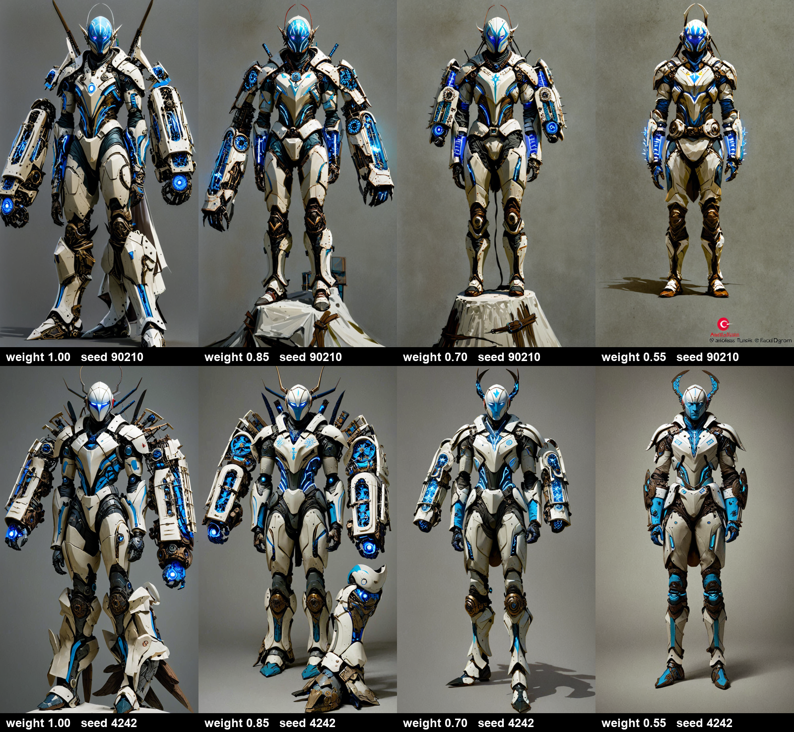
You corrected WT: the 0.85 cells I called MIXED are both BAD. That makes the ladder a cliff, not a slope — 0.85 fails 2/2, 0.70 passes 2/2 — which is good news for picking 0.70 and bad news for the confidence behind it. Two seeds cannot tell “clean” from “fails 1 in 5”, and you have called this defect unacceptable rather than undesirable.
So: 6 fresh seeds at 0.70 (the shipped ceiling) and 6 at 0.60 (the fallback, rendered now so a bad result doesn't cost another round-trip). Subject_C alone, nothing else moving. All 12 weights verified distinct in the sidecars.
What I see — and my eyeball is not the gate, which is the whole lesson of WT: all 12 look two-armed to me, and at 0.60 more human faces come through (seeds 31337, 60606, 12345), which is design transfer weakening. That argues for keeping 0.70 if it grades clean.
The rule, committed before the renders: 0.70 clean 6/6 → ceiling stays at 0.70. Any defect at 0.70 → it ships too high, drop to 0.60 and the design cost goes up. Both arms defective → weight alone cannot close this and the next lever is anatomy, not a lower number.
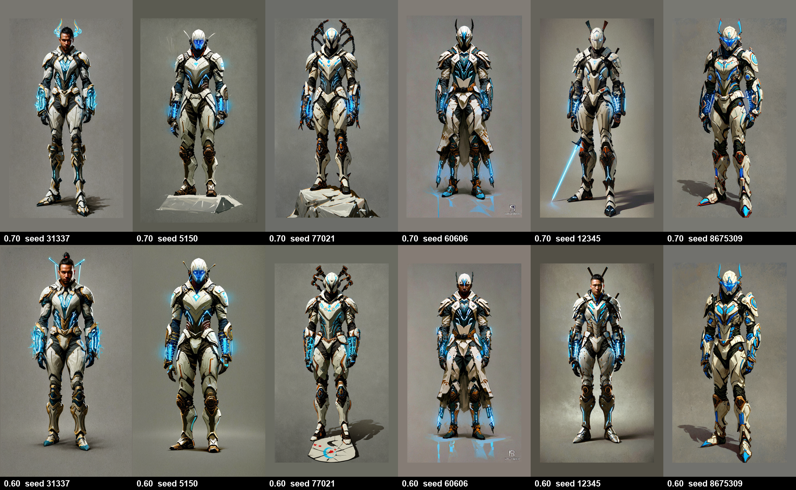
It was never cropped: the figure touched no frame edge and the vertical framing was identical on every step (height 86%, top gap 8%, bottom gap 6%). What differed was width — the mech spread 79% of the frame against its neighbours' 60–62%, which on a sheet where the steps sit side by side reads as zoomed in.
The first attempt at a width ceiling shipped broken and was pulled the same day. It measured width with a colour threshold against the corner pixels, which works on a flat plate and fails on a gradient one — the backdrop clears the threshold and the mask spans the frame. Over 12 renders it called 9 of them wider than 90%, including one whose figure occupies 53%. So it demanded a huge shrink and pasted the render inside a grey border, worse than the problem. Now measured with the u2net matte instead, and floored so the width term can never demand that shrink again.
CORRECTION. An earlier version of this page showed a BEFORE/AFTER sheet here. That sheet was WRONG and Jason caught it: "this third one was NOT solved, too much head room, feet still cut". It was built by running scale_lock over COPIES OF ALREADY-SCALE-LOCKED renders, so it shrank them a SECOND time — and shrinking twice with the feet pinned to the baseline is what dumped 21.4% of head room at the top. That is my test harness, not the pipeline. Measured on real renders the framing is fine: head room 7.9-10.6%, foot room 5.7-6.2%, and NO image touches an edge, so nothing is cut.
| measured (u2net matte) | head room | foot room | feet cut? |
|---|---|---|---|
| real run — step 1 | 9.4% | 6.0% | no |
| real run — step 2 | 7.9% | 6.2% | no |
| real run — step 3 (the mech) | 10.6% | 5.7% | no |
| my broken test copy | 21.4% | 5.9% | no |
Your note: “these renders (ESPECIALLY the end-caps), it should look like a baseline
render (single Subject at START/END) and use all the same pipelines, not some special hack”
— correct, and here is exactly where. BlendRun did POST to the normal
/api/discovery/run, but it hand-built the request body instead of sending what
GO sends. Forced or missing: size hardcoded 768×1344 (ignoring your aspect), novelty forced
to 0, Misc forced off, and no style, no held prop, and no per-Subject label — so an
end-cap rendered an unnamed subject with no gear and no wildcards. It could not look like a
baseline render because it wasn't one.
It now reads all of that from the saved project, the same source GO uses. Turning novelty
and Misc back on does not uncontrol the ladder, which is why this is safe rather than a
trade-off: novelty rolls from Random(seed ^ 0xA11CE) and Misc from
Random(seed), and a BlendRun holds ONE seed for every step — so every rung
draws the same wildcards and the same gear, and the blend stays the only thing moving.
Verified on a live 3-step run. The label now tracks the blend exactly: step 1 carries
samurai only, step 2 carries samurai and cyborg,
step 3 carries cyborg only. And the end-caps resolve to weight 0.7, not 1.0
— so BlendRun inherited the extra-arms fix automatically. No extra arms at 100% C.
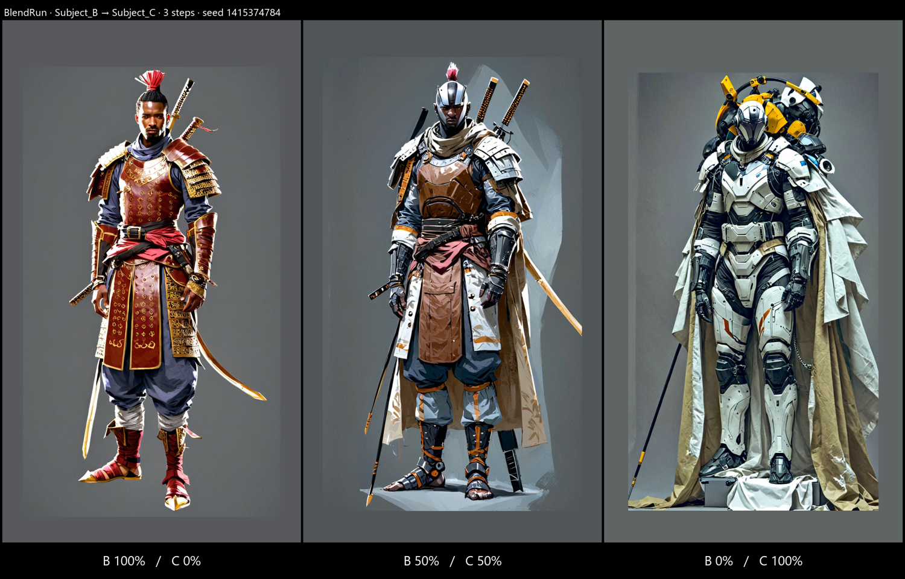
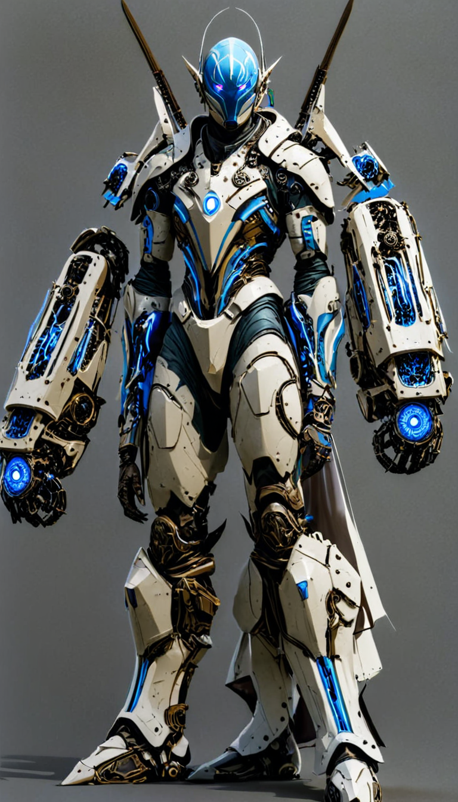
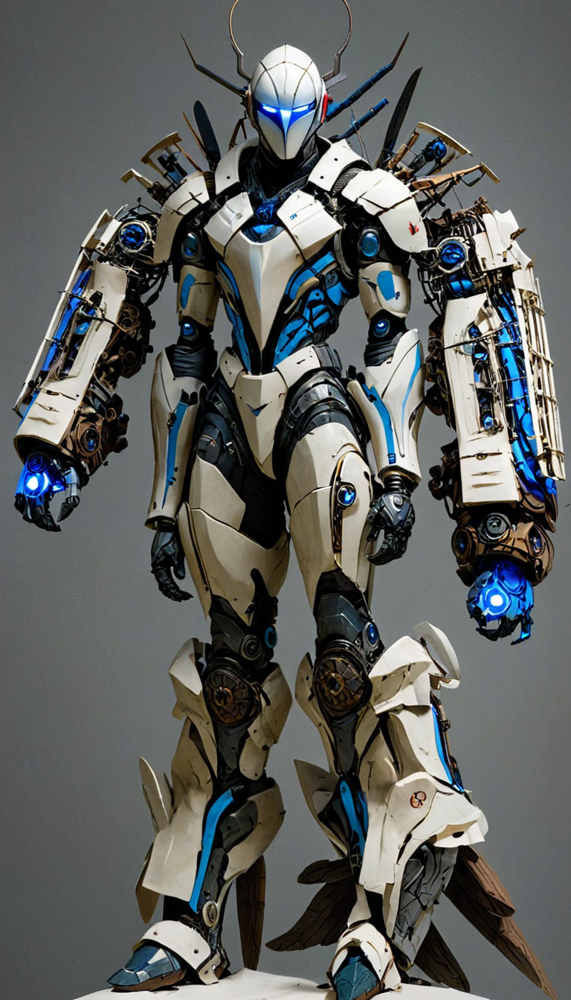
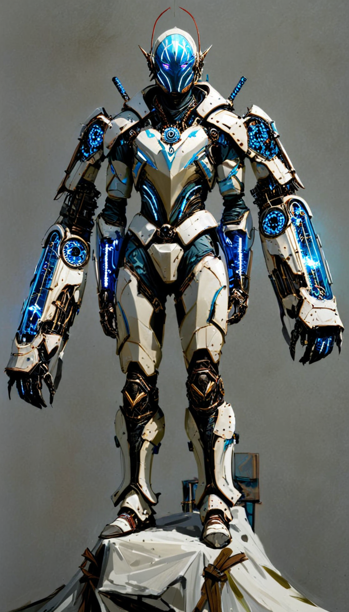
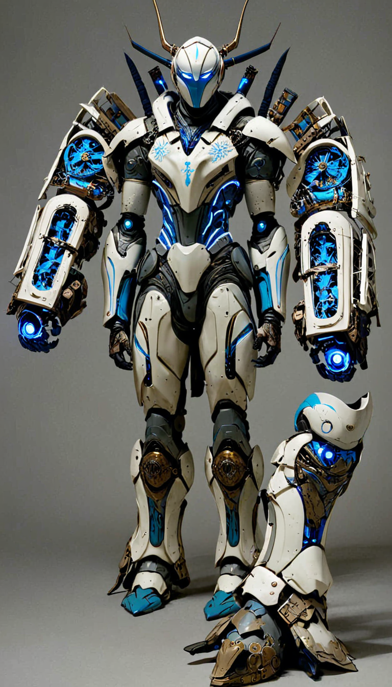
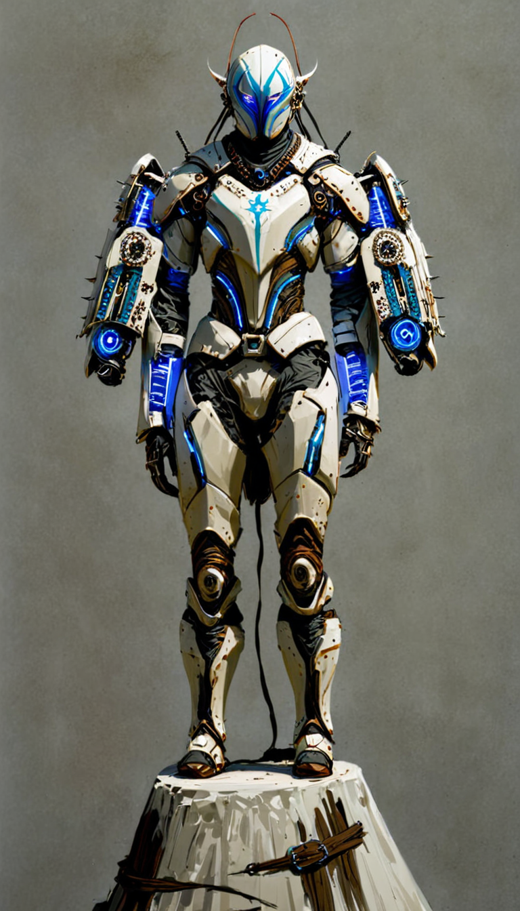
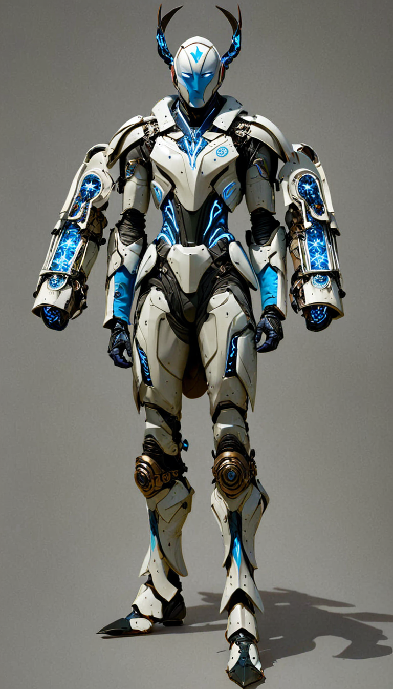
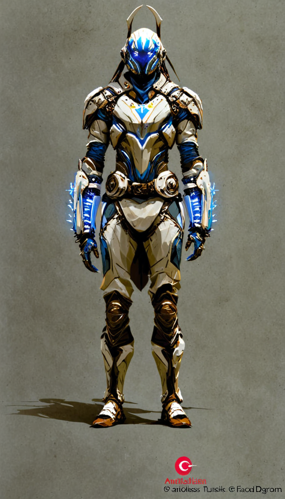
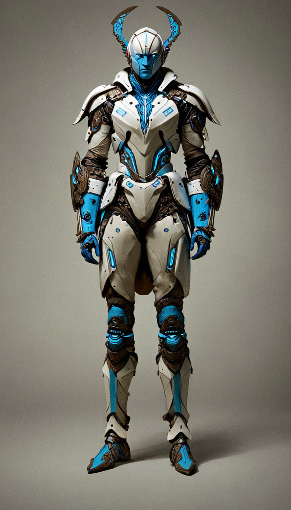